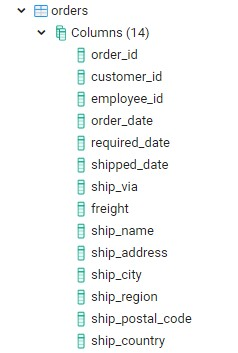

PostgreSQL Unit 9 - INNER, LEFT, and RIGHT JOIN
Στο σημερινό δωρεάν μάθημα SQL θα δούμε πως μπορούμε να λάβουμε δεδομένα ταυτόχρονα από δύο ή και περισσότερους πίνακες, πως αντιπροσωπεύεται μια σχέση ανάμεσα σε πίνακες μέσα στην βάση, και τι ακριβώς δεδομένα μπορούμε να λάβουμε με την χρήση του Left και του Right Join.
Για να μπορέσουμε να λάβουμε ταυτόχρονα δεδομένα από δύο ή και περισσότερους πίνακες, θα πρέπει να πρώτα να ανακαλύψουμε αν αυτοί οι πίνακες συσχετίζονται μεταξύ τους. Αυτή την πληροφορία μπορούμε να την λάβουμε πολύ εύκολα αν δούμε τις στήλες από τους οποίους αποτελούνται οι πίνακες. Για παράδειγμα, ας υποθέσουμε ότι θέλουμε να βρούμε το όνομα του πελάτη, την ημερομηνία της παραγγελίας και την χώρα στην οποία θα αποσταλθεί η παραγγελία. Για να απαντήσουμε σε αυτό το ερώτημα θα πρέπει να ασχοληθούμε με δύο πίνακες: τον customers και τον orders. Ας δούμε πρώτα τις στήλες του customers.
Τώρα ας δούμε και της στήλες του πίνακα orders.
Θέλουμε τώρα λοιπόν να ψάξουμε και να βρούμε ποιες στήλες είναι κοινές ανάμεσα στους δύο πίνακες. Με μια γρήγορη αναζήτηση θα ανακαλύψουμε ότι η στήλη employee_id είναι κοινή και στους δύο πίνακες. Φυσικά αυτό δεν είναι κάτι τυχαίο. Η δομή και η αρχιτεκτονική της βάσης έχει οριστεί και καθοριστεί από κάποιον DBA, Database Architect ή Software Architect. Το γεγονός ότι υπάρχουν κοινές στήλες ανάμεσα στους πίνακες είναι μέρος της αρχικής σχεδίασης. Το πως δημιουργούμε πίνακες, στήλες σε πίνακες και σχέσεις ανάμεσα στους πίνακες είναι κάτι που θα μας απασχολήσει αργότερα. Για τώρα μας αρκεί το γεγονός ότι ανάμεσα στον customers και στον orders πίνακα υπάρχει μια κοινή στήλη με το όνομα customer_id.
Ωραία, αφού γνωρίζουμε τους δύο πίνακες που περιέχουν τις πληροφορίες για τις οποίες ενδιαφερόμαστε, και αφού υπάρχει κοινή στήλη ανάμεσα στους πίνακες, μπορούμε να δημιουργήσουμε ένα query που ταυτόχρονα ζητάει πληροφορίες από τους δύο πίνακες χρησιμοποιώντας την κοινή στήλη σαν κοινό παράγοντα.
Στην ουσία, αυτό που ζητάμε είναι να δούμε records (δηλαδή τιμές πεδίων ανά πίνακα) αν και εφόσον υπάρχουν. Δηλαδή θέλουμε να δούμε τις παραγγελίες του πελάτη αν και εφόσον έχουν γίνει παραγγελίες. Για να μπορέσουμε να απαιτήσουμε δεδομένα από πολλαπλούς πίνακες χρησιμοποιούμε την εντολή Inner Join.
Για την σωστή εκτέλεση της εντολής θα πρέπει να γράψουμε και το όνομα του πίνακα μαζί με το όνομα της κοινής στήλης για να μπορεί να αναγνωρίσει η βάση σε ποια στήλη αναφερόμαστε κάθε φορά. Για παράδειγμα: customers.customer_id.
Ακόμα όμως δεν έχουμε απαντήσει την ερώτηση: ποια είναι η δομή ενός query που περιέχει Inner Join?
Επειδή την εντολή JOIN, εξ ορισμού, η PostgreSQL την διαχειρίζεται σαν INNER JOIN μπορούμε να παραλείψουμε το INNER και να έχουμε το ίδιο ακριβώς αποτέλεσμα.
Ας δούμε πρώτα το query που θα γράφαμε για να λάβουμε την επιθυμητή πληροφορία από την βάση και μετά θα δώσουμε μια ποιο ολοκληρωμένη εξήγηση.
Για να κατανοήσουμε καλύτερα την όλη διαδικασία, ας δούμε και τα δεδομένα όπως βρίσκονται μέσα στους δύο πίνακες.
Σαν αρχή, το query θα πάει πρώτα να ελέγξει και να επιβεβαιώσει την ύπαρξη των δύο πινάκων (FROM order JOIN customers). Αμέσως μετά θα πάει σε κάθε πίνακα και θα ελέγξει την ύπαρξη της στήλης customer_id. Όταν επιβεβαιωθεί και αυτός ο έλεγχος, τότε η βάση ξεκινάει να διαβάζει την στήλη customer_id γραμμή προς γραμμή από τον πίνακα orders . Για κάθε row που διαβάζει από τον πίνακα orders, σταματάει και ελέγχει όλη την στήλη customer_id από τον πίνακα customers. Αν βρει κοινή τιμή (δηλαδή η τιμή να είναι ίδια όπως VINET), τότε πηγαίνει στο SELECT και μας δίνει το company_name από τον έναν πίνακα και το order_date και ship_country από τον δεύτερο. Μετά η βάση πηγαίνει στην επόμενη γραμμή του customer_id του πίνακα orders. Αφού διαβάσει την τιμή, διαβάζει όλη την στήλη από τον πίνακα customers και όπου βρει την ίδια τιμή τότε πάλι μας παρέχει τις πληροφορίες από τις στήλες που ζητάμε από το SELECT. Η διαδικασία αυτή συνεχίζεται μέχρι να συγκριθούν για ισότητα όλες οι τιμές της στήλης customer_id του ενός πίνακα με την customer_id στήλη του άλλου πίνακα.
Τώρα που καταλάβαμε πως γίνεται το INNER JOIN ή απλά JOIN σε δύο πίνακες, ας δούμε πως μπορούμε να ζητήσουμε πληροφορίες από περισσότερους πίνακες αν και εφόσον μας είναι απαραίτητο. Η λογική είναι πολύ απλή – απλά προσθέτουμε επιπλέον INNER JOIN clauses με το όνομα του επιπλέον πίνακα και της στήλης με την οποία θα γίνει η σύγκριση. Η γενική δομή είναι η εξής:
Ή αν θέλουμε μπορούμε να παραλείψουμε την λέξη INNER και να γράψουμε το query ως εξής:
Για να δουλέψουμε με ένα συγκεκριμένο παράδειγμα, ας θεωρήσουμε ότι επιθυμούμε να βρούμε το company_name, order_date, product_id, unit_price και quantity που προέρχονται από τους πίνακες customers, orders και order_details.
Η υλοποίηση ενός τέτοιου query είναι η εξής:
Αν προσέξετε το query που μόλις εκτελέσαμε, θα δείτε πως ανάμεσα στον πίνακα orders και order_details η κοινή στήλη είναι η order_id ενώ ανάμεσα στους πίνακες customer και orders η κοινή στήλη είναι η customer_id. Στην ουσία βρίσκουμε πρώτα το id του customer από τον πίνακα customers και ψάχνουμε να βρούμε στον πίνακα orders αν υπάρχει κάποια παραγγελία από τον συγκεκριμένο πελάτη. Αν ναι, τότε συνεχίζουμε και βρίσκουμε με το order_id περισσότερες πληροφορίες για την παραγγελία.
Θα μπορούσαμε να φιλτράρουμε το αποτέλεσμα του προηγούμενου query με το WHERE όπως ήδη έχουμε κάνει σε προηγούμενα δωρεάν μαθήματα SQL? Φυσικά και μπορούμε. Ας υποθέσουμε λοιπόν ότι θέλουμε να δούμε τις ίδιες πληροφορίες όταν όμως το συνολικό ποσόν της παραγγελίας ξεπερνάει το 500.
Εκτός τώρα από το INNER JOIN υπάρχουν δύο ακόμα κατηγορίες που ονομάζονται LEFT JOIN και RIGHT JOIN. Στην ουσία αν καταλάβετε το ένα τότε αυτόματα ξέρετε πως λειτουργεί και το δεύτερο. Για να κατανοήσετε όμως καλύτερα την χρησιμότητα τους ας γυρίσουμε πίσω στο INNER JOIN και ας τρέξουμε ένα απλό query.
Με το συγκεκριμένο query ζητάμε να δούμε τους πελάτες που έχουν πραγματοποιήσει κάποια παραγγελία. Αν δηλαδή υπάρχει ένα customer_id στον πίνακα orders με την ίδια τιμή που έχει και το customer_id στον πίνακα customers τότε σημαίνει ότι έχει γίνει κάποια παραγγελία.
Τώρα ενδιαφερόμαστε να δούμε στα σίγουρα μια ολόκληρη λίστα με όλους τους πελάτες και προαιρετικά, αν και εφόσον υπάρχουν, και εκείνους τους πελάτες που ικανοποιούν την συνθήκη δηλαδή έχουν παραγγείλει. Στα σίγουρα όμως θέλουμε να δούμε τους όλους τους πελάτες. Πως μπορούμε να το υλοποιήσουμε αυτό? Εδώ λοιπόν έρχεται να μας βοηθήσει το LEFT JOIN. Ας δούμε πως γράφεται και μετά θα εξηγήσουμε το αποτέλεσμα.
Εκ πρώτης όψεως ίσως σας φανεί ότι το LEFT JOIN σας παρουσιάζει το ίδιο αποτέλεσμα όπως και το INNER JOIN. Όμως αν πάτε μέχρι το τέλος των αποτελεσμάτων θα δείτε πως υπάρχουν και εταιρείες (δηλαδή πελάτες) για τους οποίους δεν υπάρχει order_id δηλαδή δεν έχουν ενεργοποιήσει καμία παραγγελία.
Οπότε πως λειτουργεί ένα LEFT JOIN? Ο πιο εύκολος τρόπος για να το θυμάστε είναι απλά να δείτε τον τρόπο με τον οποίο γράφουμε την συγκεκριμένη γραμμή – FROM customers LEFT JOIN orders. Οπτικά λοιπόν, δηλαδή στα αριστερά του LEFT (αυτό σημαίνει και η αγγλική λέξη left), υπάρχει ο πίνακας customers. Οπότε LEFT σημαίνει ότι από τον πίνακα που βρίσκεται αριστερά του LEFT JOIN (δηλαδή customers) ζητάμε να δούμε όλα τα δεδομένα, ενώ από τον πίνακα που είναι δεξιά από το LEFT JOIN ζητάμε προαιρετικά να δούμε και εκείνα τα δεδομένα που ικανοποιούν την συνθήκη. Στο συγκεκριμένο παράδειγμα, για τους δύο συγκεκριμένους πελάτες δεν υπάρχουν παραγγελίες οπότε τα πεδία έχουν null τιμές. Ο λόγος που εμφανίζεται αυτό το αποτέλεσμα είναι γιατί ζητήσαμε να δούμε όλους τους πελάτες σαν πρώτο όρο και σαν δεύτερο όρο να δούμε ποιοι από τους πελάτες ικανοποιούν την συνθήκη. Οι πελάτες χωρίς παραγγελίες προέρχονται από τον πρώτη μας απαίτηση.
Αν τώρα θέλαμε να δούμε μόνο εκείνους τους πελάτες που δεν έχουν παραγγείλει ακόμα μπορούσαμε να προσθέσουμε ένα WHERE clause με την εξής λογική:

Αν τώρα αντί για LEFT χρησιμοποιούσαμε RIGHT JOIN τότε θα ζητούσαμε να δούμε όλα τα δεδομένα του πίνακα από τα δεξιά του RIGHT JOIN και προαιρετικά εκείνα τα δεδομένα που ικανοποιούν την συνθήκη σε σχέση με τον πίνακα από τα αριστερά.
Αν σκεφτείτε ότι μπορούμε απλά να αντιστρέψουμε την σειρά των πινάκων και να πάρουμε το ίδιο ακριβώς αποτέλεσμα με το RIGHT JOIN τότε είσαστε απολύτως σωστοί.